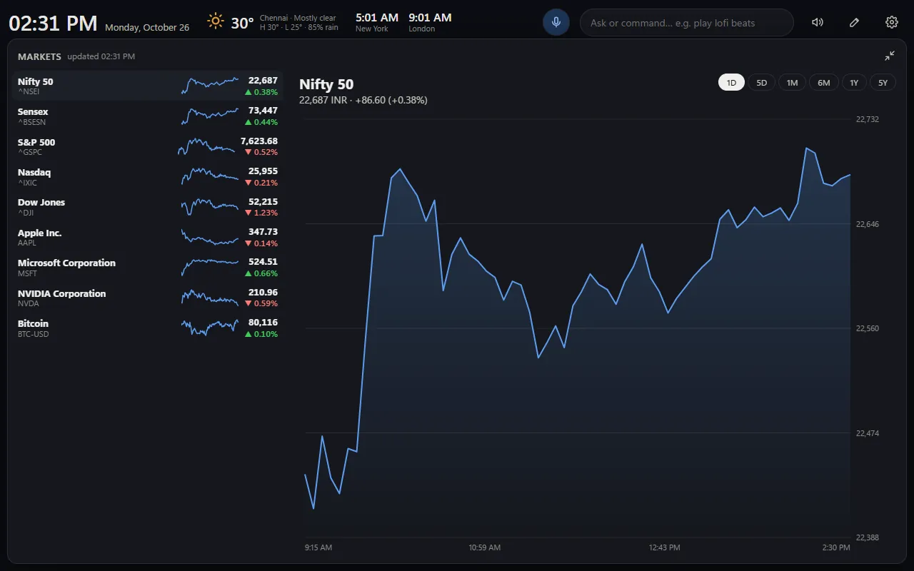
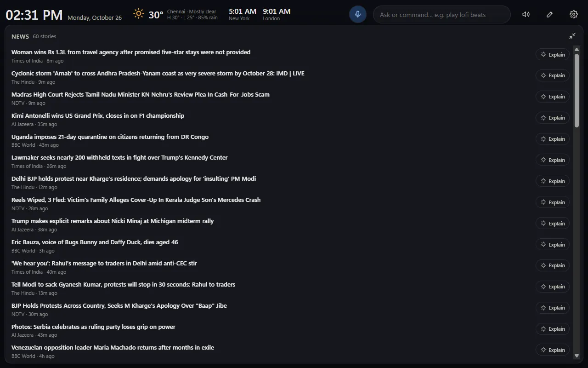
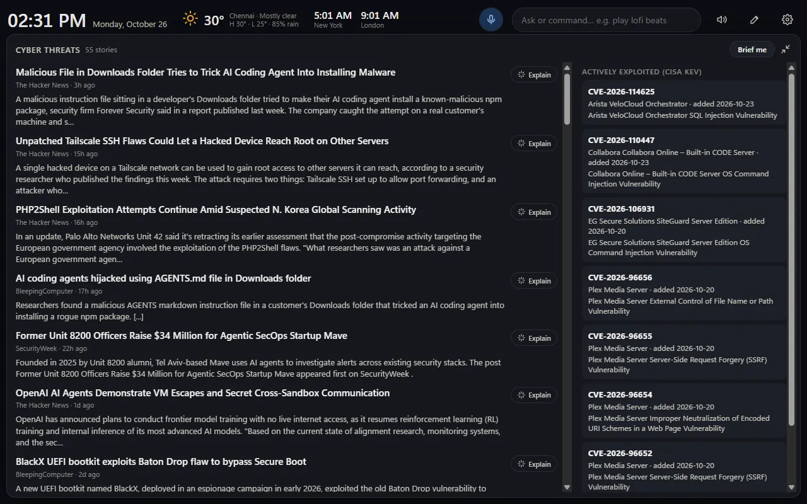
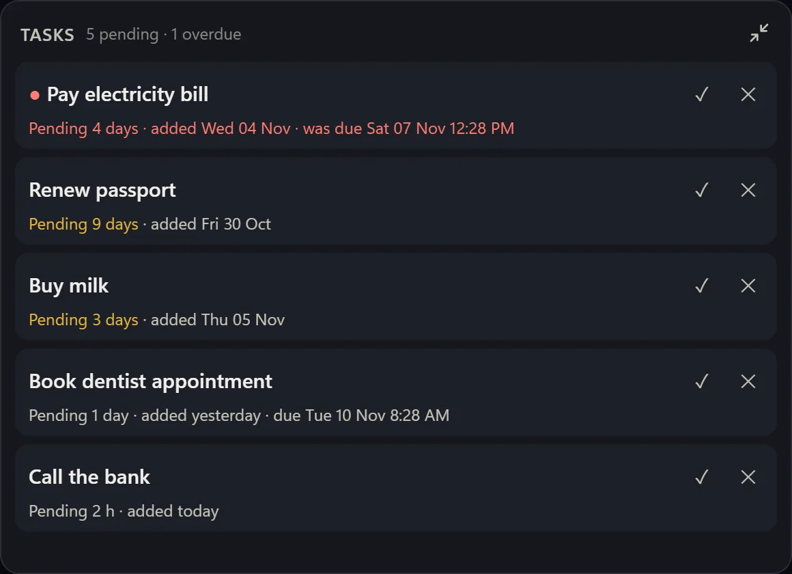
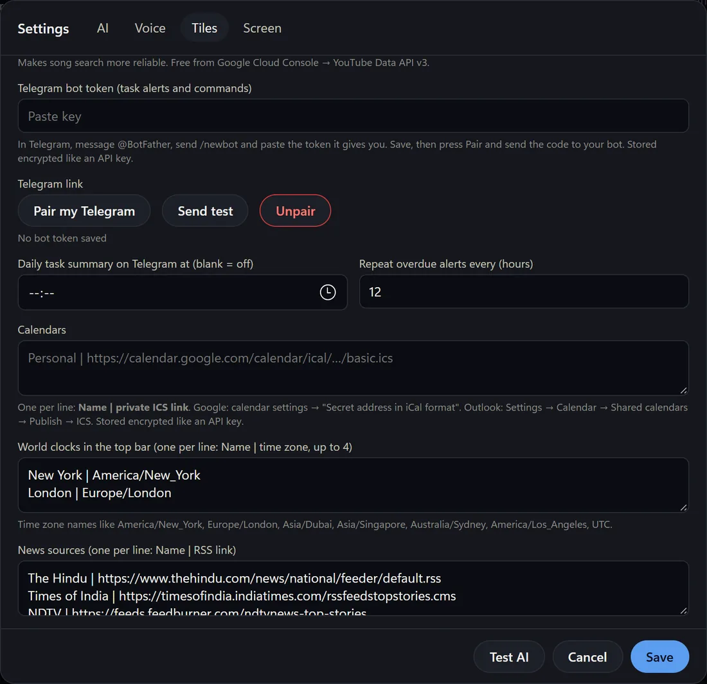
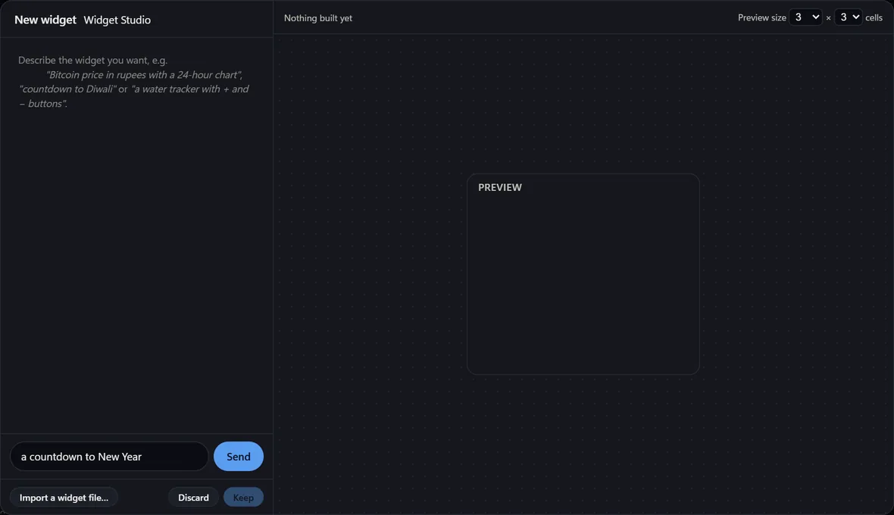

Project story
From photo frame to Jarvis
I bought a portable 16-inch display, thought about a photo frame, and ended up with a voice-controlled dashboard that runs on my own local AI model.
- Built for
- A portable 16-inch display, or any second monitor
- Platform
- Windows 10 and 11
- AI
- A local model on your PC, or your own cloud key
- Control
- Voice with a wake word you can retrain, or typing
- Phone
- Optional Telegram bot for task alerts and commands
- Status
- Run it from source. There is no installer yet
- Tiles
- Clock, weather, news, markets, music, timers, tasks, PC stats, calendar, WhatsApp, cyber threats
I bought a slim 16-inch portable display, and the first question was what to do with it. Mirroring the laptop screen or extending it wasn't much of a use. Then I thought of a photo frame. A photo frame on its own didn't feel like enough, though, so I turned it into a dashboard with the things I like to keep an eye on.
A screen worth glancing at
I work in GMT, so the first thing I wanted was the time there, next to my local time. I also wanted alarms, so I don't miss a deadline. Then I added the things I check all day: where my shares stand, messages from friends, and the news as it happens.

Each piece is a tile, so I can see the whole day at once. Shares are one tap away from a bigger chart, with ranges from one day to five years.

Adding a local brain
I already had a local AI model running on my PC, so I connected it to the dashboard. It also works with your own cloud key (Google Gemini, an OpenAI-compatible service or Anthropic) if you prefer, or with no AI at all. It turned the screen from a set of tiles into a voice assistant. I can ask it to play a song, look up a detail, or tell me what is happening, and it answers over the command. Nothing has to be typed.
What is happening
The news tile is where I start most mornings. Each story has an Explain button that uses the AI to summarise it and read it aloud, so I can catch up without opening a dozen tabs.

I also follow security news, so there is a cyber threats tile. It lists the latest stories and the vulnerabilities that attackers are already using.

Tasks that follow you to your phone
The dashboard has a Tasks tile that shows how long each task has been waiting and the date it was added. The problem with a tile on a second monitor is that you only see it when you are at your desk. So I linked it to Telegram.

- Alerts. An overdue task is repeated every 12 hours by default. A task with no due date gets a nudge after 1, 3 and 7 days, then weekly. An optional daily digest arrives at a time you choose.
- Commands. Send
add: pay bill by friday 6 pm,list,done 2,snooze 2 3dordelete 2, and the tile updates. - Ask your PC. If System Utilities is installed,
/pc how much disk space is free?asks it a question. Questions only: nothing on your PC can be changed from Telegram.
You can also say “add a task buy milk by Friday” to the dashboard itself.
Setting it up takes a few minutes and no server:
- In Telegram, message @BotFather, create a bot and copy its token.
- In the dashboard, open Settings, then Telegram, and paste the token. It shows a one-time
/paircode. - Send that
/pairmessage to your bot. From then on, only that chat can command the dashboard.

About privacy. The bot is your own, so there is no shared service of mine in the middle. The token is stored in Windows Credential Manager on your PC, not in a file. Your messages do travel through Telegram, so do not put anything in a task that you would not put in a Telegram chat.
Build your own tiles
The newest part is Widget Studio. In edit-layout mode you describe a widget in plain words, for example a countdown to New Year, and the AI writes a small widget, checks that its data sources work, and lets you place it. Widgets run in a locked-down sandbox: they can only fetch the sources they declared, and your API keys never reach them. It needs an AI key of your own, and Google Gemini has a free tier.

Why Jarvis
The name comes from the same place as the idea: Marvel films and AI videos I'd watched. A voice that answers questions, runs the house, and keeps track of everything felt like the right fit, so the assistant is called Jarvis.
It isn't fixed. The wake word is a model I can retrain, so if I want a different name later, I can train one. For now, the name ties the project to the movies that inspired it.